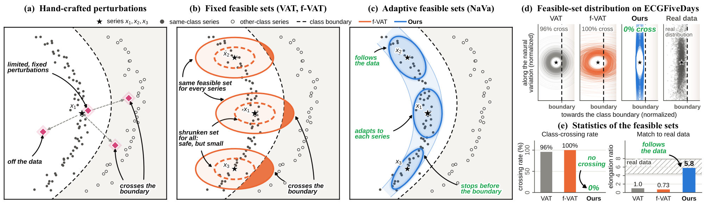
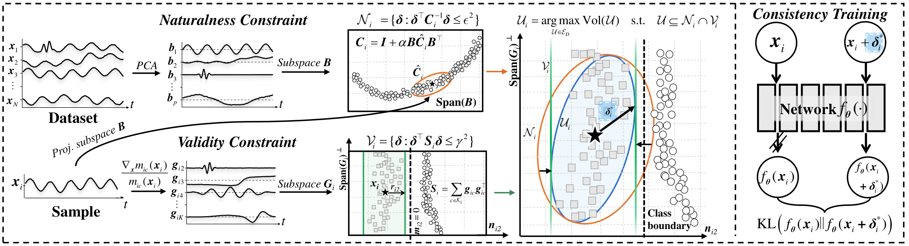
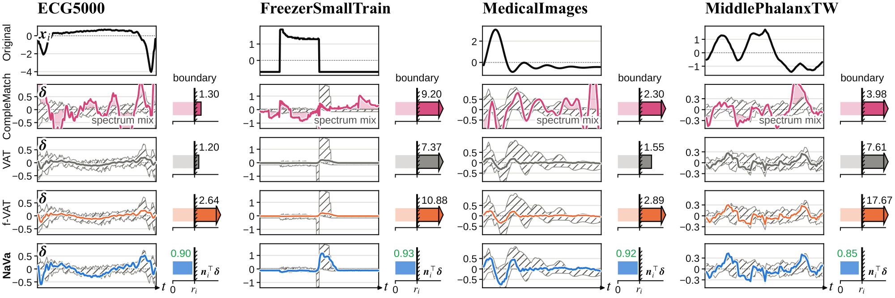

NaVa: Constructing Natural and Valid Perturbation Feasible Sets for Semi-Supervised Time Series Classification
1Shenzhen International Graduate School, Tsinghua University
2School of Information Science and Technology, University of Science and Technology of China
3Department of Electronic Engineering, Tsinghua University
†Corresponding author
Abstract
The critical challenge of semi-supervised time series classification lies in how to fully exploit the large volume of unlabeled series to improve generalization. Existing methods, despite their diverse schemes, enforce consistency over a set of perturbations for each series, termed the perturbation feasible set. However, such feasible sets, either composed of hand-crafted augmentations or tethered to fixed priors, may push perturbed views off the real data distribution or across the class boundary. In this paper, we identify two requirements on the feasible set, namely naturalness and validity, which require every perturbed view to be a plausible series and to preserve the class semantics of the original series, respectively. We formally define the construction of the feasible set as a constrained optimization problem, with the two requirements formulated as constraints derived from the local variations of real series and the class margins of the model, respectively. To this end, we propose Natural and Valid Perturbation (NaVa), which maximizes the volume of the ellipsoid subject to both constraints. This problem admits a unique closed-form solution, shrinking the feasible set only along the few axes crossing the class boundary and dynamically adapting as training progresses. Theoretically, NaVa satisfies both requirements while imposing consistency regularization no weaker than uniform shrinkage, whereas VAT and f-VAT, as special cases, either cross the class boundary or have to shrink uniformly. Extensive experiments on univariate, multivariate, and real-world datasets demonstrate that NaVa performs favorably against state-of-the-art methods, is compatible with their schemes, and consistently improves time series foundation models.
Perturbation feasible sets
Existing methods enforce consistency over either a few hand-crafted augmentations shared by all series, or a ball tethered to a fixed prior. Neither is aware of where the real series lie or where the class boundary is.

Method
NaVa formulates the construction of the feasible set as a constrained optimization problem: the largest ellipsoid that satisfies a naturalness constraint and a validity constraint.

Naturalness
Principal component analysis on all training series gives a subspace of their principal variation patterns. Within it, the nearest neighbors of each series give its local variations, and the naturalness constraint Ni is an ellipsoid extending along them.
Validity
The gradients of the class margins of the model point toward the class boundary. The validity constraint Vi limits the extent along each of these directions to a fraction γ of the distance to the boundary, and adapts as training progresses.
Maximum-volume feasible set
NaVa takes the ellipsoid of maximum volume within Ni ∩ Vi. Diagonalizing both constraints simultaneously gives a unique closed form, in which the length along each axis is the smaller of the lengths allowed by naturalness and validity: aij = min{ ε, γ / √ηij }. The feasible set thus shrinks only along the few axes that cross the class boundary.
Consistency training
Each perturbation in the ellipsoid is a linear transformation of a vector in the unit ball, so the perturbation that maximally changes the prediction is found by one power iteration, as efficiently as in VAT and without projections. Consistency is enforced between the predictions on the series and on this perturbed view.
Results
NaVa is compared with 13 methods on the same backbone and data splits, and is further built upon three time series foundation models with different pre-training paradigms.
| Method | UCR (106) | UEA (5) | Real-world (10) | |||
|---|---|---|---|---|---|---|
| 10% | 20% | 40% | 10% | 1% | 5% | |
| Supervised only | 71.40 | 77.07 | 79.86 | 56.44 | 75.16 | 81.11 |
| Classic semi-supervised | ||||||
| Mean-Teacher | 73.78 | 78.29 | 81.86 | 57.31 | 76.27 | 82.22 |
| FixMatch | 74.12 | 78.18 | 81.67 | 58.46 | 77.62 | 82.71 |
| DivideMix | 73.17 | 77.81 | 81.37 | 58.15 | 77.14 | 81.72 |
| Time series semi-supervised | ||||||
| SemiTime | 73.87 | 78.30 | 81.97 | 57.95 | 76.14 | 81.78 |
| MTL | 75.71 | 80.47 | 83.60 | 57.68 | 80.89 | 85.15 |
| TS-TFC | 76.53 | 80.07 | 82.92 | 58.52 | 80.22 | 86.40 |
| DiffShape | 76.43 | 80.37 | 83.38 | – | – | – |
| CA-TCC | 74.07 | 78.63 | 82.03 | 57.86 | 80.11 | 82.54 |
| CompleMatch | 78.67 | 81.98 | 84.87 | 58.96 | 83.12 | 86.32 |
| Adversarial perturbation-based | ||||||
| VAT | 77.10 | 79.86 | 82.55 | 57.21 | 79.79 | 82.22 |
| tVAT | 77.82 | 81.10 | 83.39 | 58.23 | 78.52 | 83.03 |
| f-VAT | 78.39 | 81.54 | 84.35 | 59.13 | 82.03 | 85.26 |
| NaVa | 82.93 | 86.03 | 88.48 | 62.29 | 85.62 | 89.38 |
Each dataset contributes the mean over 5 folds (5 labeled subsets for HAR, Sleep-EDF and Epilepsy). FCN is the backbone for UCR and the real-world datasets, and the encoder of CA-TCC for UEA. DiffShape is designed for univariate series.
| Method | Mantis | MOMENT | Chronos-2 | |||
|---|---|---|---|---|---|---|
| 10% | 20% | 10% | 20% | 10% | 20% | |
| Zero-shot | 75.71 | 79.50 | 75.32 | 78.40 | 75.77 | 79.21 |
| Fine-tuning | 76.19 | 81.22 | 74.76 | 77.95 | 76.14 | 81.19 |
| CompleMatch | 77.06 | 81.27 | 74.17 | 78.58 | 76.79 | 81.26 |
| VAT | 76.97 | 81.77 | 75.75 | 79.28 | 76.30 | 81.28 |
| f-VAT | 77.47 | 82.60 | 76.71 | 80.76 | 76.79 | 81.79 |
| NaVa | 80.81 | 85.25 | 80.19 | 83.68 | 80.76 | 84.59 |
Visualization

Code and weights
The code, data splits and per-dataset hyperparameters are on GitHub; the trained FCN classifiers of all 106 UCR datasets (10% labeled series, 5 folds) are on the Hugging Face Hub.
pip install -r requirements.txt
python scripts/make_splits.py --benchmark ucr --root /path/to/UCRArchive_2018 --out data/ucr
python scripts/run.py --config configs/ucr.yaml --dataset GunPoint --ratio 0.1 --fold 0 \
--out results/gunpoint_f0.json
python scripts/evaluate.py --dataset GunPoint # the released weights, 5 foldsAcknowledgements
We thank the maintainers of the UCR and UEA time series classification archives, and the authors of CA-TCC for releasing the preprocessed HAR, Epilepsy and Sleep-EDF data.